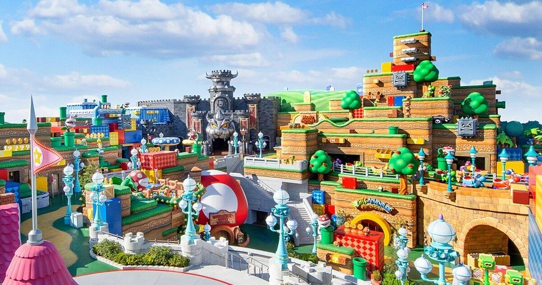
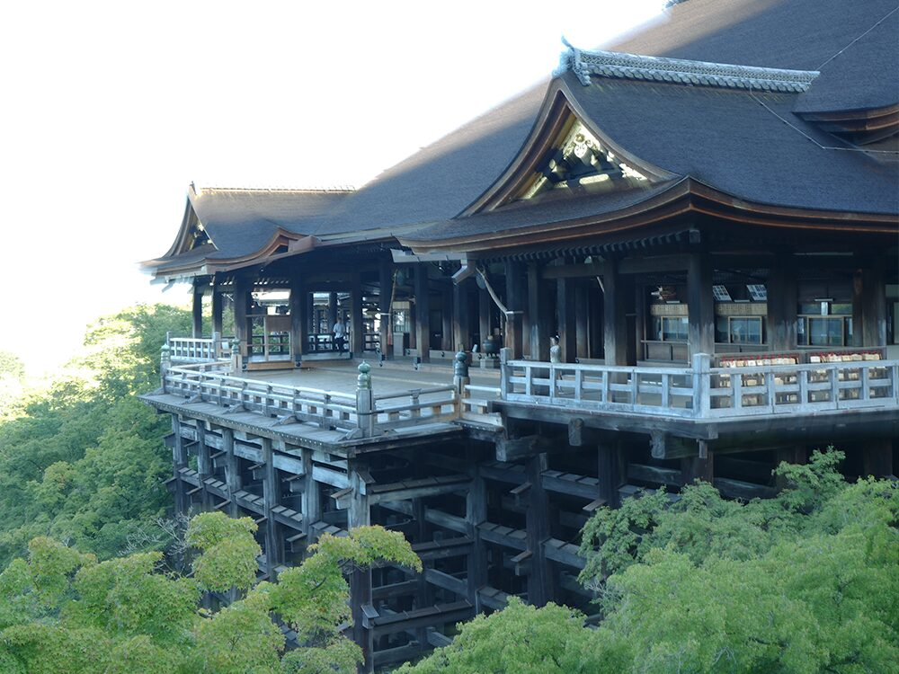
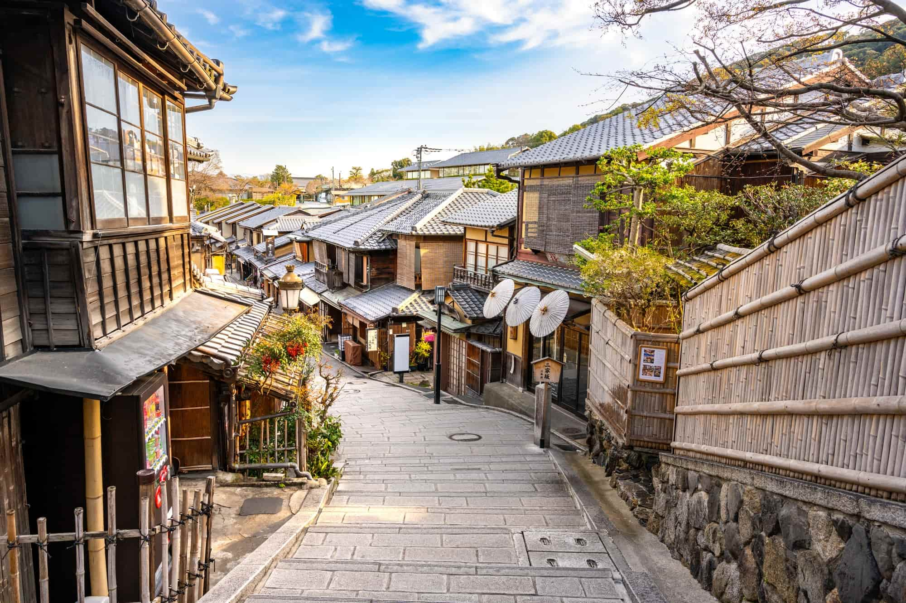
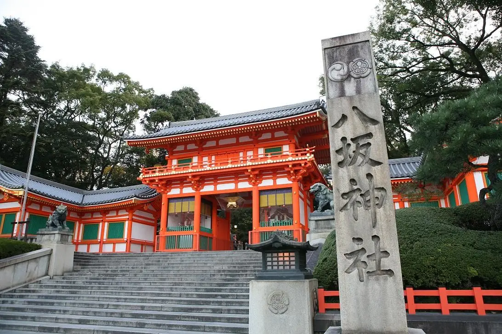
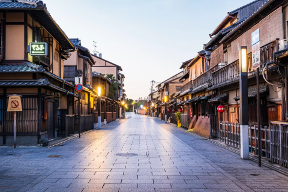

行程總覽
| 日期 | 行程內容 |
|---|---|
| 1/19 | 住家 → 桃園機場 → 關西機場 → 飯店 |
| 1/20 | 環球影城 |
| 1/21 | 大阪城、通天閣、難波八阪神社 |
| 1/22 | 清水寺、二三年坂、祇園 |
| 1/23 | 心齋橋、道頓堀 |
大阪景點

環球影城
大阪城

通天閣

難波八阪神社
京都景點

清水寺

三年坂、二年坂

八坂神社

祇園花見小路
交通與行前準備
- ICOCA 卡
- JR 與地鐵
- 護照與日幣
- 網卡或eSIM